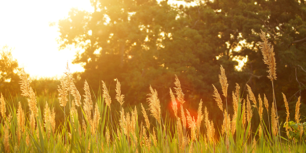
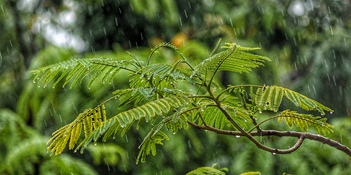

Native Forests
New Zealand is famous for its beautiful native bush and forests. Many walking tracks travel through peaceful green forests.
The bush climate is often cool and wet with lots of rainfall.
In te reo Māori, forest is called ngahere.

New Zealand’s native bushes and forests are some of the most beautiful and unique in the world. The bush is filled with tall trees, green ferns, moss-covered ground, and native plants that create peaceful natural landscapes. Many walking tracks in New Zealand pass through thick native bush where people can hear birds like the kiwi, tūī, and kererū. Famous forests such as the Waipoua Forest are home to giant kauri trees that are hundreds of years old. New Zealand’s bush is important because it protects wildlife, keeps the environment healthy, and shows the natural beauty of the country.